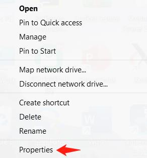
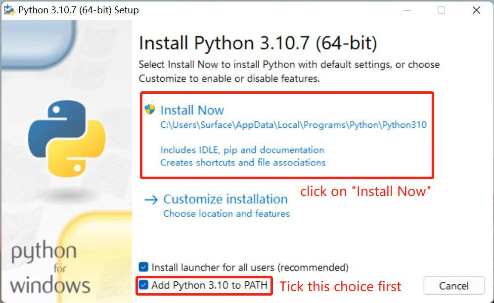
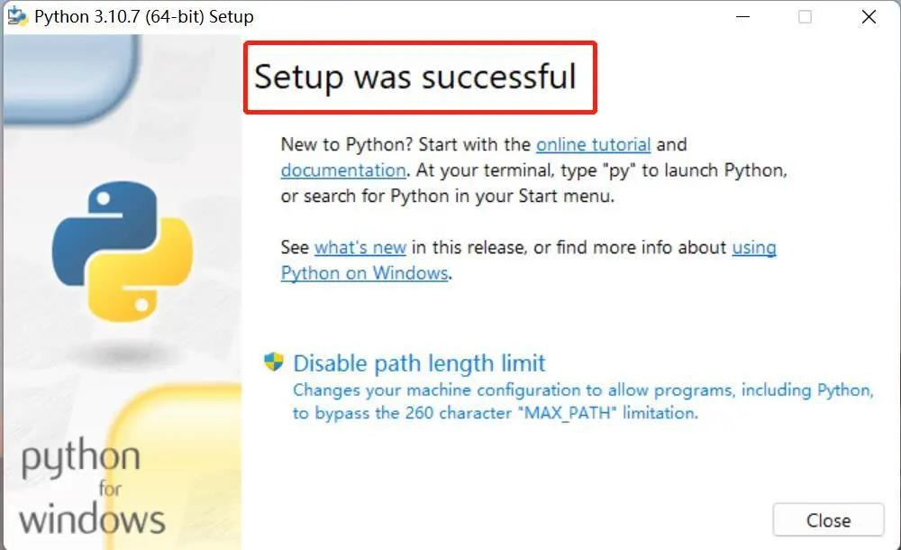
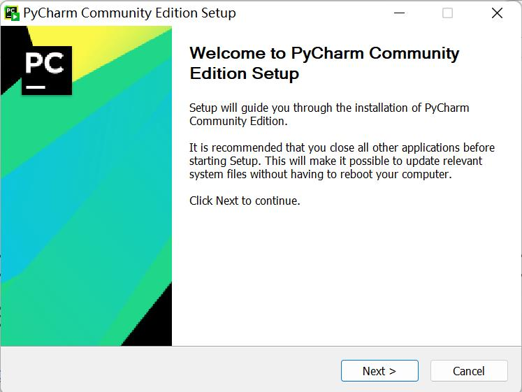
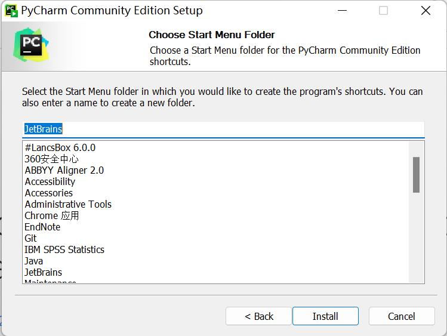
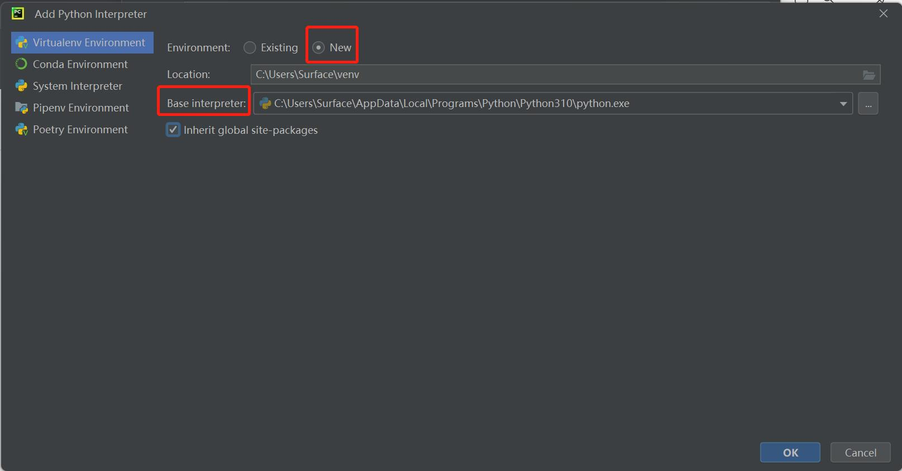
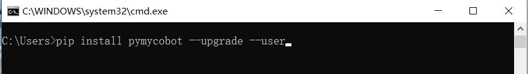
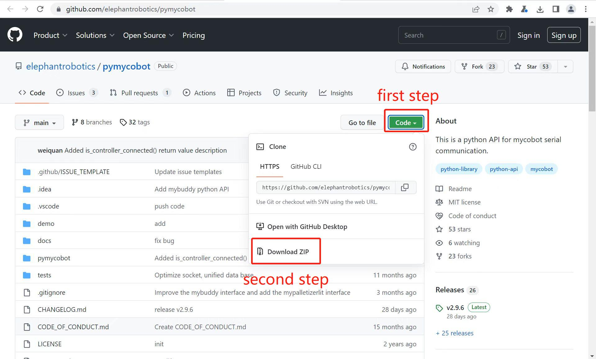

环境配置
pymycobot是Elephant Robot开发的Python库，用于机器人控制。
Linux
系统出厂时默认安装了Python 3.10.12，并且已经安装了pymycobot控制库，用户无需自行安装。
pymycobot 安装
通过终端输入命令即可安装pymycobot
pip install pymycobot
pymycobot 卸载
您可以通过终端输入命令来卸载pymycobot
pip uninstall pymycobot
pymycobot 更新
您可以通过终端输入命令来更新pymycobot
pip install pymycobot -U
窗口
1.1 安装Python
注意： 安装前，请检查PC的操作系统。 在“我的电脑”图标上按右键，然后选择“属性”。安装相应的Python。


- 前往http://www.python.org/download/下载Python。
- 点击“下载”，然后开始下载。 勾选“将 Python 3.10 添加到 PATH”。 单击“立即安装”，然后开始安装。



- 下载并安装完成。

1.2 运行Python
打开命令提示符窗口（Win+R，输入“cmd”并按“Enter”）。 输入“Python”。
安装成功：

屏幕上出现此指示意味着 Python 已成功安装。 提示符“>>>”表示Python交互环境。 如果输入一段Python代码，立即得到执行结果。
错误报告：
如果输入了错误的指令，例如“pythonn”，系统可能会报告错误。

注意： 一般情况下，该错误是由于环境配置不足造成的。 参考1.3 环境配置解决问题。
1.3 环境变量配置
Windows 遵循 Path 环境变量设置的路径来搜索 python.exe 。 否则会报错。 如果安装时没有勾选“Add Python 3.9 to PATH”，则需要手动将python.exe所在路径添加到环境变量中或者重新下载python。 请记住勾选“将 Python 3.9 添加到 PATH”。
按照以下步骤手动将 python 添加到环境变量中。
- 右键单击“我的电脑”图标 --> 属性 -> 高级系统设置 -> 环境变量

- 环境变量包括用户变量和系统变量。 对于用户变量，用户可以通过“cmd”命令使用自己下载的程序。 将目标程序的绝对路径写入用户变量中。


- 配置完成后，打开命令提示符窗口（Win+R；输入“cmd”并按“Enter”），然后输入“Python”。

2 PyCharm的安装
PyCharm 是一款功能强大、具有跨平台性质的 Python 编辑器。 请按照以下步骤下载并安装 PyCharm。
前往 PyCharm 下载 PyCharm。
2.1 下载与安装
官网查看：

建议安装免费版本。
- 点击“下一步”：

- 根据您的需要选择选项，然后选择“下一步”：

- 点击“安装”：

- 安装：

点击“完成”

2.2 创建新项目
- 点击“+新建项目”：
Interpreter用于解释Python程序。 选择“添加解释器”->“新建”以添加基本解释器。

Location是指保存python文件的位置。 选择一个文件来放置您的程序。
点击“创建”，会出现一个示例：
右键单击红色箭头所指的选项，然后创建一个新的 python 文件。
键入新文件的名称。
3 准备工作
pymycobot 安装。 通过终端（Win+R）“cmd”命令输入“pip install pymycobot --upgrade --user”。
pip install pymycobot --upgrade --user

源码安装。 打开终端（Win+R，输入
cmd），然后输入以下命令进行安装。git clone https://github.com/elephantrobotics/pymycobot.git <your-path> #<your-path>中填写你的安装地址，不要选择当前默认路径。 cd <your-path>/pymycobot #进入下载包的pymycobot文件夹。 #根据您的python版本运行以下命令之一。 ＃ install python2 setup.py install ＃ or python3 setup.py install更新pymycobot
pip install pymycobot --upgrade
注意：
- 如果代码下方没有出现红色波浪线，则说明pymycobot安装成功。
- 如果出现红色波浪线，请前往地址 https://github.com/elephantrobotics/pymycobot 手动下载 pymycobot 并将其放入 python 库中。

Python的基本使用
from pymycobot import MercuryL1Client
mc = MercuryL1Client('192.168.1.232',netport=6501)
mc.power_on(0) # 左右臂同时上电
print(mc.get_angles())